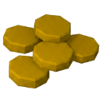
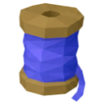
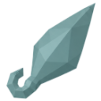
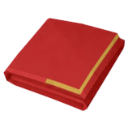

Elvish Goblin
👑 Boss · Level 25 · 🌾 Ashvale
| Property | Value |
|---|---|
| Weakness | ⚔️ Melee |
| Hitpoints | 150 |
| Attack | 21 |
| Strength | 17 |
| Defence | 10 (+14 armour) |
| XP per kill | 480 |
| Slayer | 🎯 Scout Tomas gives tasks here (Slayer 5, combat 10) |
Drops
| Item | Amount | Chance |
|---|---|---|
| 1–2 | Always | |
 Coins | 120–320 | Always |
| 10–30 | Common (50%) | |
| 🔺 Bronze Arrowheads | 10–30 | Common (50%) |
 Magical Thread | 1 | Rare (1 in 250) |
 Arrow Tip of Returning | 1 | Rare (1 in 250) |
 Silk Lining | 1 | Rare (1 in 250) |